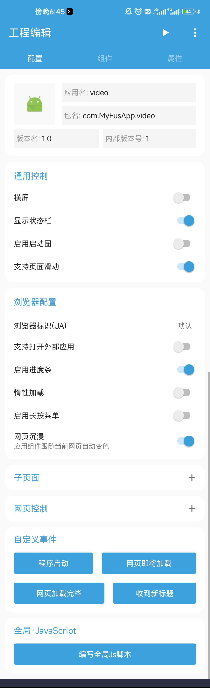
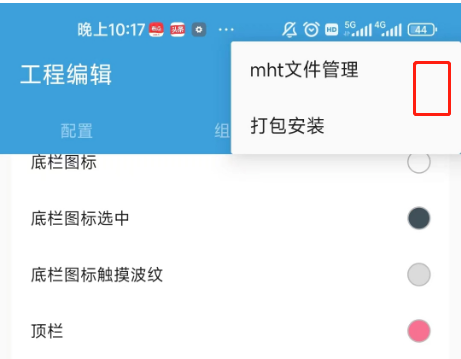

一个独立博客的安卓 App，我用 FusionApp 在两个夜晚搞定了
朋友的技术博客想做个安卓客户端分发，我试过好几种壳工具都嫌重，最后捡了个 FusionApp，靠着拼组件和几行 Lua 就把 APK 打出来了——本文聊聊那两个夜晚我都折腾了些什么。
周五晚上十点，朋友在微信上戳我：「能不能帮我给博客整个安卓 App？」
他那博客是自己搭的 Hugo 站，每天两三篇技术短文，读者微信群里总有人问「有没有客户端可以装手机上」，他自己不会写 Java，外包报价起步两万，就想到我这个折腾党。我本来想随便找个 WebView 壳工具应付一下——以前也这么干过，套个壳，加个启动图，打个包就完事。但这回他提了几个正经需求：侧边栏要挂各个栏目入口、顶栏要有站内搜索、点文章里的外链要在应用内用浏览器控件打开、还要能调出来一个设置页面让用户切换夜间模式。
我翻出以前收藏的几个壳工具挨个试，要么不支持侧滑栏，要么搜索栏是死的不能挂回调，要么收费版才能改 WebView 的默认行为。折腾到十二点，我搜了一圈，搜到 fusionapp官网。
拼积木一样搭界面：组件列表里挑挑拣拣
打开项目，第一眼看到的是组件编辑器——左边一栏是组件列表，有侧滑栏、顶栏、底部 Tab、悬浮按钮、WebView 控件、对话框模板，每个都能拖到右侧预览区。这玩意儿我之前在不少可视化搭建工具里见过，但 FusionApp 不一样：它不是让你画一个静态的 App 外观，而是每个组件都自带回调钩子，可以用 Lua 脚本挂事件。
我先把他博客的主页链接填进了 WebView 控件的初始网址，预览区立刻跑起来了，就是个浏览器窗口。然后拖了一个侧滑栏组件上去——样本里提到的 drawer-list 那种，列表项目可以挂事件跳网址，子页面还能承载独立的第二界面。我把博客的四个栏目（教程、随笔、工具、归档）分别做成侧滑列表项，每个的点击事件直接跳对应的栏目路由。侧滑栏就这么成了，没有写一行 Java。

然后是顶栏搜索。样本里说 FusionApp 的顶栏搜索有专门的 UI 事件回调函数——名字、参数、写法都给了模板。我照着模板写了两行 Lua：用户在搜索框输入关键词点确认，把他博客的站内搜索链接拼一下，然后把 WebView 导航过去。以前用其他壳工具，想让搜索栏真的有用，要么买付费版要么硬改源码，这下两行脚本解决了。
把 APK 打出来的那一刻我愣了一下
界面拼完了，脚本也挂好了，我点了一下工具栏里的「构建 APK」按钮。进度条跑完，弹出一个文件保存对话框——54KB 的安装包落在桌面上。我愣了一下，因为以前用另一个壳工具打出来的 APK 动辄四五十 MB，这个只有 54KB？仔细看才发现 FusionApp 把 WebView 引擎内嵌得很精简，没有多余资源。顺手去 下载 页看了一眼，还有好几个预制的模板项目能直接改。
装到手机上跑了一遍：侧滑栏能拉出来、点栏目能跳转、顶栏搜东西确实能跳到搜索结果页、点文章里的外链也在应用内用浏览器控件打开了。唯一卡了一下的是夜间模式切换——样本里 FAQ 那页提到有些改动不生效，后来去 fusionapp文档 翻了 WebView API 那页才找到：要用 setNightMode 方法，不能直接改 CSS 变量。改了一行脚本，重启应用，切换就生效了。

周末复盘：这种工具的价值在哪
两个夜晚，总共不到五个小时，一个不会写 Java 的人，靠拼组件和几行 Lua 脚本就把一个独立博客的安卓客户端做出来了。朋友拿到 APK 直接传到了自己的网盘分享，当天微信群里就有三十多个人装了。
我在想，FusionApp 这种工具真正厉害的地方不是「把网站套成 App」——这件事早就有几十种工具能做了。它厉害的是把每个组件的细节都开放出来让你用脚本调：侧滑栏的列表项能挂事件、顶栏搜索能接回调、WebView 控件能调前进后退和页内查找。这些细节，其他壳工具要么做不到，要么藏在付费版里。对于像我朋友这样的独立开发者、小站长、甚至只是想给自己的网站做个移动端入口的人来说，这种「能改细节」比「一键生成」值钱多了。
后来我又把他的应用加了个启动图和夜间模式的快捷切换按钮，总共又写了十来行 Lua。整个开发过程我甚至没打开过 Android Studio——就 FusionApp 自己的编辑器，预览区实时跑，改完脚本保存立刻能看效果。这可能就是低代码工具该有的样子：简单的事情让你能拖拖拽拽搞定，复杂的细节又留了脚本接口让你能往下挖。
如果你也有个网站想做个安卓客户端分发，或者想给自己的某个小工具加一层手机端的壳，FusionApp 值得试一试。它的文档写得很细，每个组件的属性、每个回调的参数、WebView 能用的 API 都列全了，踩坑的时候翻一翻基本能找到答案。我在写那篇夜间模式切换的时候卡了五分钟，翻了 WebView API 的那一节，直接就找到了 setNightMode 的用法。资料在三个仓库都能拿到，GitHub、Gitee 和 GitCode 上都有完整的文档目录，按你的网络环境选一个就好。